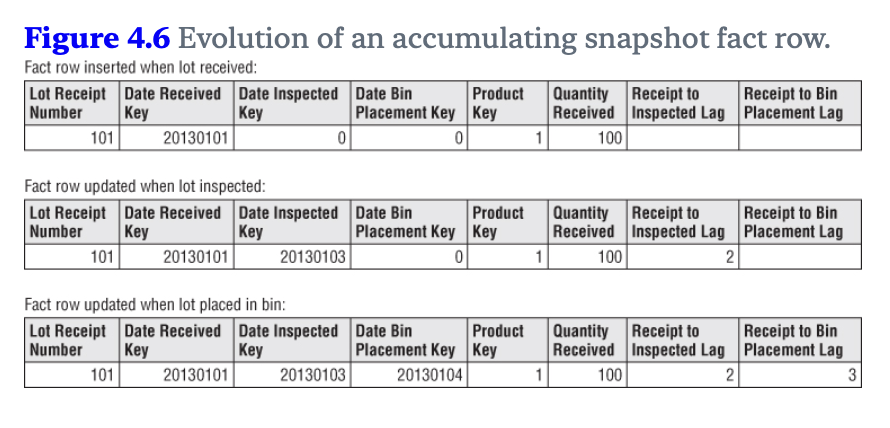

Reading: ‘The Data Warehouse Toolkit: The Definitive Guide to Dimensional Modeling’ by Ralph Kimball and Margy Ross
My notes and perspective on this classic of data engineering
A Lead Data Engineer recommended this book while we collaborated on a business intelligence project. Our product depended on a data warehouse built by our team. As his Product Manager counterpart, we frequently discussed changes affecting the warehouse. He often cited best practices from this book, a standard in the industry.
While I could discuss the pros and cons of data modeling choices with him, I lacked the vocabulary and deeper conceptual knowledge to match his expertise. Throughout my career, I have worked extensively with data warehouses and handled light data engineering projects myself, but I never built a full dimensional model.
Understanding these concepts and techniques seemed valuable. Online, this book is often called the guide to data modelling and data warehousing, a classic for all data engineers. Naturally curious, I decided to give it a go.
I read the book cover to cover and didn’t skip any section. At 23 hours (per my Kindle), it is a long read. But, it’s also dense and practical.
In the following sections, I will highlight what stuck with me (the ideas I intend to remember) and reflect on how they connect to my own work experience. Several parts of the book brought back memories from past companies.
Most salient sections/concepts for me
The four key decisions when designing a dimensional model
1. Select the business process
The advice is: start by modeling a business process. KPIs, metrics, reports can then be built on this fondation. Do not design your dimensional model based on the KPIs and reports available.
Excerpt from the book:
Business processes are the operational activities performed by your organization, such as taking an order, processing an insurance claim, registering students for a class, or snapshotting every account each month.
2. Declare the grain
The grain defines the level of detail for the dataset i.e. what a single fact table row represents.
Choose the lowest possible grain (atomic grain) from the source systems. This approach offers the most flexibility. Users can then aggregate and manipulate the data as they wish.
3. Identify the dimensions
Dimensions provide the context for a business process event. For example, when a sale happens, the context dimensions are date, product, store, payment method, promotion.
In reports, dimensions serve as descriptive attributes (typically text labels). They are also used to filter the facts and to form groups during aggregation.
4. Identify the facts
Facts are the numeric measurements tied to a business event. All facts for a single event are stored in one table, which includes foreign keys. These keys link each fact row to its associated dimensions (the context information).
From the book:
Facts are the measurements that result from a business process event and are almost always numeric. A single fact table row has a one-to-one relationship to a measurement event as described by the fact table’s grain. Thus a fact table corresponds to a physical observable event, and not to the demands of a particular report. Within a fact table, only facts consistent with the declared grain are allowed. For example, in a retail sales transaction, the quantity of a product sold and its extended price are good facts, whereas the store manager’s salary is disallowed.
Business participation
The authors emphasise that strong business buy-in is essential for project success. This makes sense, but two points stood out to me. They were not obvious at first and I found them particularly valuable:
Staff the project with business team members, who are also responsible for its success. Give them responsibilities and ask them to gather requirements, feedback, validate certain decisions and spread the word in the organisation.
Establish a data stewardship/governance program beforehand, with identifiable data stewards. As the book states:
Data stewardship or governance programs should focus first on the major dimensions. Depending on the industry, the list might include date, customer, product, employee, facility, provider, student, faculty, account, and so on. Thinking about the central nouns used to describe the business translates into a list of data governance efforts to be led by subject matter experts from the business community. Establishing data governance responsibilities for these nouns is the key to eventually deploying dimensions that deliver consistency and address the business’s needs for analytic filtering, grouping, and labeling. Robust dimensions translate into robust DW/BI systems.
The three fundamental types of fact tables
Transaction fact tables: these are the most common in my experience. Each row represents a single measurement at a specific time and place. It can be an event or one line item inside an event. Rows only exist if an activity occurred. The word transaction is confusing here, because it suggests a table with sales data. In practice, they are not limited to measuring sales.
Periodic snapshot fact tables: these tables summarise measurement events over a fixed period (a day, week, month, …). The grain is determined by the period selected. Unlike transaction tables, rows exist even if no activity took place. For example, I have used these to analyse the daily availability of inventory. A daily snapshot for each product and country was created with its availability status and its quantity.
Accumulating snapshot fact tables: these tables represent the advancement of processes that have a clear start, standard intermediate steps and a clear end. Each row updates whenever the process reaches a new step, recording the data and relevant measurements. This structure simplifies calculating the time duration between various steps.
Illustration from the book:

Variations and adaptations of these fact tables:
- Factless fact tables
- Aggregate fact tables or OLAP cubes
- Consolidated fact tables
SCDs: Slowly Changing Dimensions
Describing these techniques succinctly is challenging. My notes below will make sense if you’ve read the chapters. Otherwise, the explanations may seem abstract.
This section taught me the most about dimensional design, associated trade-offs and opened my mind to technical complexity. I’ll admit: some SCD types took me multiple attempts to grasp. The book’s case studies were helpful for clarifying these concepts.
These techniques address a fundamental challenge: how to manage attribute changes in dimensions over time. For example, let’s imagine that a company updates its product categorisation system. A product previously in Sports is now in Streetwear. How should the dimension table reflect this change?
Five core types:
- Type 0: retain the original
- consequence: facts can only be associated with the attribute’s original value
- Type 1: overwrite
- consequence: facts can only be associated with the attribute’s current value
- Type 2: add new row
- introduce a new surrogate key
- introduce “row effective date” and “row expiration date” columns
- optional: add a “current row indicator” column
- consequence: facts are associated with the attribute’s value in effect when the fact happened
- Type 3: add new attribute
- replace current attribute value in the target column
- add a new column: “prior {attribute name}” which stores the attribute value
- consequence: facts can be associated with the current and prior attribute value
- Type 4: add mini-dimension
- useful for large dimension tables (lots of rows) where Type 2 changes are frequent (which adds many rows)
- move frequently changing attributes to a separate dimension (seems to be frequent for customer demographics dimensions). Leave stable attributes in the original table.
- create one row in the mini-dimension for each combination of attribute values. Alternatively, add rows only for existing combinations and update as new ones appear.
- consider creating value bands for continuous attributes (convert salary to salary bands, for example)
- finally, insert a foreign key to the mini-dimension in the fact table. It captures a snapshot of the combination of attributes (for example: the customer demographics profile) at transaction time.
3 hybrid types:
- Type 5: mini-dimension and type 1 outrigger
- this builds on Type 4 by adding a foreign key to the mini-dimension in the large dimension table (outrigger)
- example: in a large customer dimension with a mini-dimension for demographic attributes, each time the demographic profile is updated the foreign key in the customer dimension gets updated (Type 1 change)
- the fact table provides the demographic profile at transaction time, while the customer dimension reflects the current profile
- Type 6: add Type 1 attributes to Type 2 dimension
- note: the name is confusing. It feels like a more advanced Type 3 SCD to me
- Example: with two columns, “historic department name” and “current department name” (similar to a Type 3 setup)
- when the department name changes:
- apply Type 2: create a new row with “row effective date”, “row expiration date” and “current row indicator” columns with the correct dates/timestamps
- apply Type 1: update the “current department name” value
- facts join with the row active at transaction time, which also include the current attribute value
- Type 7: dual Type 1 and Type 2 dimensions
- the fact table includes two foreign keys:
- one links to a dimension table managed according to Type 6
- one links to a view of this dimension table showing only current values
- Benefit: when the fact table is queried, a choice is available. Use the historical values to filter and group by, or use the latest status
- the fact table includes two foreign keys:
Case study on Clickstream data
Most of my analyst experience is in e-commerce, where Google Analytics clickstream data was the primary data source.
I was curious to see how the authors recommended integrating this data into the data warehouse, for the following reasons:
- Google Analytics’ raw data, once exported to BigQuery, is heavily nested, with a schema that takes time to master. Expecting analysts from other parts of the company or other disciplines to use is not realistic. The learning curve is too steep
- At Zalando, clickstream data resided outside the data warehouse in a separate system (BigQuery). Joining it with the data warehouse was costly due to time-consuming data transfers.
The authors outline a solution in their case study, using these building blocks:
- New dimensions: Page, Event, Session, Referrer. I’d also include User
- Two fact tables: one at the Session grain and one at the Page grain. The Page fact table is a novel idea for me. In theory, it could track event counts per page or measurements like loading times. In practice, it would be challenging to maintain due to frequent changes in web and app experiences
- Aggregate clickstream fact tables: create tables at different grains (session, month, entry page, etc.) to summarise facts
From experience, aggregate fact tables strike me as the most practical and valuable approach. This makes for much smaller tables to query (raw clickstream data is very large). Key user behaviour facts become easily accessible. And these tables can be intelligently augmented with new attributes (for example: a flag for sessions with cart abandonment, likelihood score of being a bot).
Audit dimensions and error event schema
I wish I had these for debugging in the past or to investigate sudden changes in metrics.
I saw audit dimensions in action in a previous freelance project. For example, it let us trace suspicious numbers back to the exact ingested file. It allowed us to answer questions from business stakeholders with precision. Excerpt from the book with more details:
When a fact table row is created in the ETL back room, it is helpful to create an audit dimension containing the ETL processing metadata known at the time. A simple audit dimension row could contain one or more basic indicators of data quality, perhaps derived from examining an error event schema that records data quality violations encountered while processing the data. Other useful audit dimension attributes could include environment variables describing the versions of ETL code used to create the fact rows or the ETL process execution time stamps. These environment variables are especially useful for compliance and auditing purposes because they enable BI tools to drill down to determine which rows were created with what versions of the ETL software.
Error datasets:
The error event schema is a centralized dimensional schema whose purpose is to record every error event thrown by a quality screen anywhere in the ETL pipeline.
I have never encountered such error tables. But, as a data warehouse user, I would appreciate this transparency.
Conformed dimensions
From the book:
Dimension tables conform when attributes in separate dimension tables have the same column names and domain contents. Information from separate fact tables can be combined in a single report by using conformed dimension attributes that are associated with each fact table.
[…]
Conformed dimensions, defined once in collaboration with the business’s data governance representatives, are reused across fact tables; they deliver both analytic consistency and reduced future development costs because the wheel is not repeatedly re-created.
[…]
Without shared, conformed dimensions, a dimensional model becomes a standalone application. Isolated stovepipe data sets that cannot be tied together are the bane of the DW/BI movement as they perpetuate incompatible views of the enterprise. If you have any hope of building a robust and integrated DW/BI environment, you must commit to the enterprise bus architecture. When dimensional models have been designed with conformed dimensions, they can be readily combined and used together.
Conformed dimensions are a clear advantage of dimensional models and are essential to their success. However, the effort required to achieve this conformity is easy to underestimate. Agreeing across departments on consistant names, values and definitions for business concepts is challenging. This is especially true when systems have evolved organically in different parts of the organisation or come from multiple vendors.
Reflections
Data as a Product
The book does not describe it in these terms. However, it is clear that the authors advocate for the application of the product management method to the design of the data warehouse. They suggest a close relationship with the end users, understanding their needs and designing the dimensional model in accordance. They urge readers to consider the value to the business when making decisions. In many of their design guidelines, they emphasise ease of use for business teams. They recommend design solutions that engineers might view as suboptimal or overly complex in service of user experience. This is obviously how it should be.
It made me think of a principle that a former employer added to their group data strategy: “data as a product”. The goal was to change the company’s thinking on this subject. This principle especially targeted data-producing teams, encouraging them to treat data as part of their product surface area. One-sided schema changes, poor documentation, unreported incidents, data-quality all impacted downstream users (analysts, data scientists, consumers of internal reports). These problems slowed us down.
I believe this was the right approach, and I was pleased to see the book echo this idea.
Vocabulary
I had never encountered the terms used in this book to describe tables, techniques, columns, etc. I knew about fact tables and dimension tables. However, I had never heard of outrigger dimensions, didn’t know that fact tables had different names like accumulating snapshot fact table. When I saw the word grain, I immediately understood what it described, but I don’t think I ever heard this term. I definitely used the word level myself (at the user level, at the hit level) and I had discussions where granularity came up.
In a past project, without being aware of it at the time, I asked our central data engineering teams to improve an outrigger dimension for product certificates. I asked for the slow-changing dimension to go from Type 1 overwrite to Type 2 add new row. But we never discussed the change in those terms. We talked about “making the historical relationship between products and certificates available for analysis”. We wanted to historicise the table. This word was difficult to pronounce correctly in meetings.
Why didn’t we use this vocabulary?
- Could these terms be confined to data engineering circles and left behind when other disciplines are involved?
- Are these words in books, but rarely found in the field?
- This is a book written by authors from the USA and my work experience is in Germany and France with lots of native and non-native english speakers. Could it be the reason?
User experience improvements
As a long-time user, I was very happy to read the following advice. The points will improve your end users’ life and save them from making mistakes:
Provide human-understandable labels in addition to the technical codes and abbreviations. Quoting from the book:
Cryptic abbreviations, true/false flags, and operational indicators should be supplemented in dimension tables with full text words that have meaning when independently viewed. Operational codes with embedded meaning within the code value should be broken down with each part of the code expanded into its own separate descriptive dimension attribute.
Similarly, the book describes three different ways to handle Null values that make a ton of sense:
- In dimension tables, the authors recommend substituting Unknown or Not Applicable in place of the null value. This applies when a dimension row is incomplete or when some attributes don’t apply to all rows.
- Foreign key columns should never include nulls. Otherwise, referential integrity is broken i.e. all fact rows should be associated with all the corresponding dimensions.
- In fact tables, numeric measurements can be left null because calculations like sums and averages will correctly handle it. Replacing null with a 0 would bias the average, for example.
Provide a Date dimension so that users can easily filter or group by date-related attributes. I like an easy way to access weekend vs. weekdays , the full name for days (Monday, Tuesday, …), months (January, February, …) or even quarters (2026 Q1, 2026 Q2, …) with a simple join. Even better if public holidays can be accessed or if dates important to the business can be retrieved. I have parsed and formatted dates countless times in SQL or Python, just to extract details like month names.
Finally, in the last chapter of the book, the authors focus on the implications that big data has on data warehouses and ETL systems. While doing so, they write “Add value to data as soon as possible”:
You should apply filtering, cleansing, pruning, conforming, matching, joining, and diagnosing at the earliest touch points possible. […] Conforming takes the active step of placing highly administered enterprise attributes into major entities such as customer, product, and date. The existence of these conformed attributes allows high value joins to be made across separate application domains. A shorter name for this step is “integration!” Diagnosing allows many interesting attributes to be added to data, including special confidence tags and textual identifiers representing behavior clusters identified by a data mining professional.
In my experience, data science teams often extract data from the warehouse, create insights in silos, and rarely return those insights to the warehouse. As a result, teams often duplicate work in silos or get stuck because they cannot reproduce time-intensive research or advanced data science. I appreciate the idea of enriching data as early as possible, especially by integrating results from company-wide data mining activities.